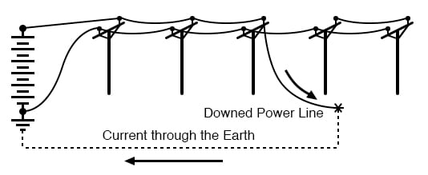
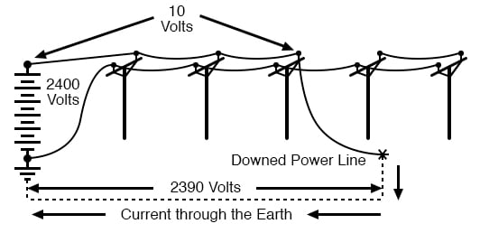
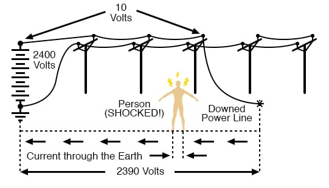

Of course, there is a danger of electrical shock when directly performing manual work on an electrical power system. However, electric shock hazards exist in many other places, thanks to the widespread use of electric power in our lives.
As we saw earlier, skin and body resistance has a lot to do with the relative hazard of electric circuits. The higher the body’s resistance, the less likely harmful current will result from any given amount of voltage. Conversely, the lower the body’s resistance, the more likely for injury to occur from the application of a voltage.
The easiest way to decrease skin resistance is to get it wet. Therefore, touching electrical devices with wet hands, wet feet, or especially in a sweaty condition (salt water is a much better conductor of electricity than fresh water) is dangerous. In the household, the bathroom is one of the more likely places where wet people may contact electrical appliances, and so shock hazard is a definite threat there.
Good bathroom design will locate power receptacles away from bathtubs, showers, and sinks to discourage the use of appliances nearby. Telephones that plug into a wall socket are also sources of hazardous voltage (the open circuit voltage is 48 volts DC, and the ringing signal is 150 volts AC—remember that any voltage over 30 is considered potentially dangerous).
Appliances such as telephones and radios should never be used while sitting in a bathtub. Even battery-powered devices should be avoided. Some battery-operated devices employ voltage-increasing circuit capable of generating lethal potentials.
Swimming pools are another source of trouble since people often operate radios and other powered appliances nearby. The National Electrical Code requires that special shock-detecting receptacles called Ground-Fault Current Interrupting (GFI or GFCI) be installed in wet and outdoor areas to help prevent shock incidents (more on these devices on the latter section of this chapter).
These special devices have no doubt saved many lives, but they can be no substitute for common sense and diligent precaution. As with firearms, the best “safety” is an informed and conscientious operator.
Extension cords, so commonly used at home and in industry, are also sources of the potential hazard. All cords should be regularly inspected for abrasion or cracking of insulation and repaired immediately.
One sure method of removing a damaged cord from service is to unplug it from the receptacle, then cut off that plug (the “male” plug) with a pair of side-cutting pliers to ensure that no one can use it until it is fixed. This is important on job sites, where many people share the same equipment, and not all people there may be aware of the hazards.
Any power tool showing evidence of electrical problems should be immediately serviced as well. I’ve heard several horror stories of people who continue to work with hand tools that periodically shock them. Remember, electricity can kill, and the death it brings can be gruesome.
Like extension cords, a bad power tool can be removed from service by unplugging it and cutting off the plug at the end of the cord.
Downed power lines are an obvious source of electric shock hazard and should be avoided at all costs. The voltages present between power lines or between a power line and earth ground are typically very high (2400 volts being one of the lowest voltages used in residential distribution systems).
If a power line is broken and the metal conductor falls to the ground, the immediate result will usually be a tremendous amount of arcing (sparks produced), often enough to dislodge chunks of concrete or asphalt from the road surface, and reports rivaling that of a rifle or shotgun. To come into direct contact with a downed power line is almost sure to cause death, but other hazards exist which are not so obvious.
When a line touches the ground, current travels between that downed conductor and the nearest grounding point in the system, thus establishing a circuit:

The earth, being a conductor (if only a poor one), will conduct current between the downed line and the nearest system ground point, which will be some kind of conductor buried in the ground for good contact. Being that the earth is a much poorer conductor of electricity than the metal cables strung along the power poles, there will be a substantial voltage dropped between the point of cable contact with the ground and the grounding conductor, and a little voltage dropped along the length of the cabling (the following figures are very approximate):

If the distance between the two ground contact points (the downed cable and the system ground) is small, there will be substantial voltage dropped along with short distances between the two points. Therefore, a person standing on the ground between those two points will be in danger of receiving an electric shock by intercepting a voltage between their two feet.

Again, these voltage figures are very approximate, but they serve to illustrate a potential hazard; that a person can become a victim of electric shock from a downed power line without even coming into contact with that line.
One practical precaution a person could take if they see a power line falling towards the ground is to only contact the ground at one point, either by running away (when you run, only one foot contacts the ground at any given time), or if there’s nowhere to run, by standing on one foot.
Obviously, if there’s somewhere safer to run, running is the best option. By eliminating two points of contact with the ground, there will be no chance of applying a deadly voltage across the body through both legs.